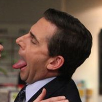

Title drops are when a TV show, movie, or other media mentions its own title in a line of dialogue. Among the top title-droppers are lots of TV shows that feature a main character's name as its title (think Seinfeld, Roseanne, Reba, Newhart, etc.). Similarly, The Office title drop count is also plentiful, since the simple title is also the location where most of the show takes place.
Some quick stats: The Office title-drops 222 times in its 201* episodes, or an average of 1.1 times per episode and 24.7 times per season. Frequent title-droppers unsurprisingly include Michael (72 times): "This little hell-raiser is Angela. She has slept with a bunch of different guys in the office"; and Dwight (36 times): "Attention in the office, please. Jim is about to prove his telekinetic powers and he needs absolute silence." But there are also a few starring characters like Stanley and Phyllis, who appear in every season but don't title-drop at all.
Now, on to the fun stuff: graphics and charts!
Title drops
each season
"PDA" (7×16)
Michael. Confession: I have done PDA in the office.
I've had intercourse in the office. As has Angela! As has Ryan. As has Kelly. As has Meredith. As has Phyllis. As has Darryl. As has Creed. As has Michael and as has Holly.
That's weird. I mean, that's weird to have sex in the office. That's where you work, right?
I am really disappointed in the office's policy on PDA at this moment.
Let me make something clear. Jim and I have never and will never have sex in the office.
No, because the office isn't what I'd consider a romantic place.
Well, the point is, there will no longer be any need for PDA here at the office between us because, when we get home, we are going to make love to and with one another.
"Counseling" (7×2)
Is one of you the office administrator?
I am. I am the office administrator!
Yeah, so I'm just going to take care of things around the office and get paid a reasonable salary.
Well, as I am sure you know, for the past few months, I've been the office administrator.
Pam, perfect. I was hoping to talk to the office administrator about a little office administration problem.
The problem, unfortunately, is about the office administrator. I have gone through everything for the past three years. There is nothing that says you are the office administrator.